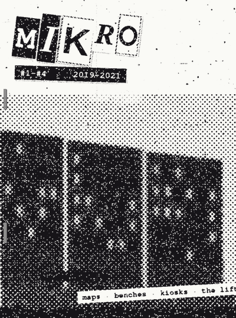
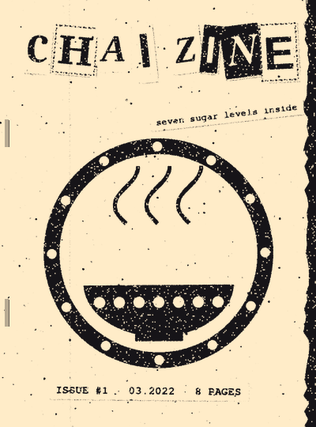
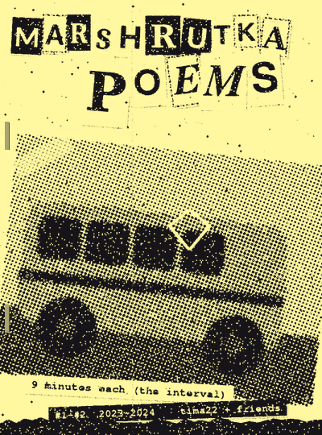
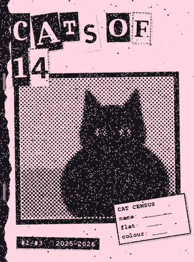
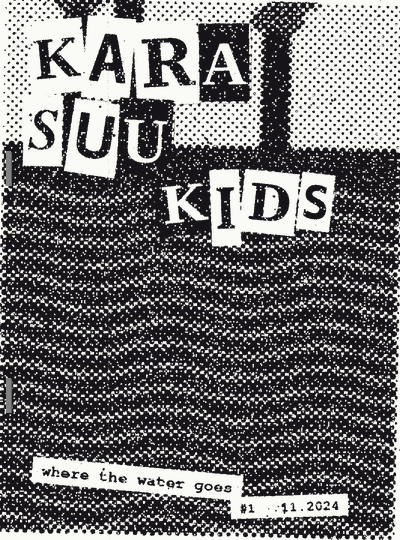
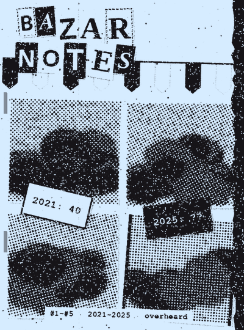
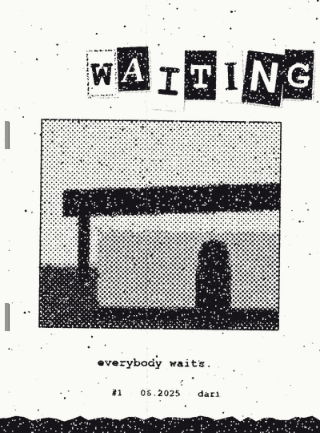
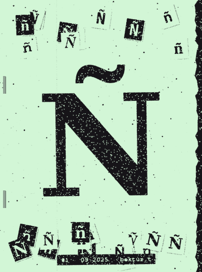

KSEROKS
zine library · Talas · Nurzhan · copied, folded, stapled, given away · 2019→

MIKRO #1–#4
2019–2021 · 12 pages · by kids of the 5th mikrorayon, Nurzhanmaps of the yards · who has the best bench · a list of every kiosk · the lift that works on Tuesdays
read a page ▸
THE BENCHES OF MKR. 5 — A RATING
1. House 14, by the fountain (dry since 2004). 9/10. Shade, view, cats.
2. House 9. 7/10. Grandmothers own it until 20:00. After 20:00 it is ours.
3. The bus stop. 4/10. It's a bus stop.

CHAI ZINE #1
03.2022 · 8 pages · by two girls who work in a chaikhanahow to pour from height without splashing · the tea vocabulary of grandfathers · seven sugar levels
read a page ▸
SEVEN SUGAR LEVELS
0 — 'no sugar' (lie)
1 — one cube, for the doctor
2 — normal
3 — guest
4 — wedding
5 — grief
6 — the driver who has been driving since 5 am

MARSHRUTKA POEMS #1–#2
2023–2024 · 16 pages · by tima22 + friendspoems written on the 22, 9 minutes each (the interval) · strips 1–3 of Marshrutka 22 on paper
read a page ▸
9 MINUTES
the window is fogged
someone drew a heart
someone else drew a horse inside the heart
TSU, the doors, the cold

CATS OF 14 #1–#3
2025–2026 · 8 pages · by ms_14census cards to cut out · Mysh's diary (fake) · how to tell General from a statue
read a page ▸
MYSH'S DIARY (FAKE)
Monday: flat 12. sofa. good.
Tuesday: flat 31. the pixel girl's divan. very good.
Wednesday: the taxi. warm bonnet. ok.
Thursday: General looked at me. I left.

KARA SUU KIDS #1
11.2024 · 12 pages · by tuntolk_fan and two classmatesthe canals of Nurzhan, photographed and drawn · the smell · a map of where the water goes · Kara Suu (the album) track by track
read a page ▸
WHERE THE WATER GOES
from the refinery under the railway, past the garages, past school No. 3, to the river. black. it shines in the sun like a record.

BAZAR NOTES #1–#5
2021–2025 · 10 pages · by anonymous (a seller's daughter)overheard at the Bazar-i Kalan · prices of 2021 vs 2025 (don't look) · the man who sells only keys
read a page ▸
OVERHEARD, SATURDAY
'This melon is from Uzbekistan.' 'It's from Chu.' 'Chu, Uzbekistan, it's a melon, sister.'

WAITING #1
06.2025 · 16 pages · by dariten bus stops, one photo each, printed in black and white (the photocopier ate the colours) · essay: why bus stops
read a page ▸
Everybody waits. The shepherd, the student, the grandmother with the buckets. The stop doesn't care who you are.

Ñ #1
09.2025 · 8 pages · by bektur_ta zine with one letter. 8 pages of Ñ. hand-cut stencils, found signs, a poem with no N in it
read a page ▸
Ñ Ñ Ñ Ñ Ñ Ñ
ñ ñ ñ ñ ñ ñ
the tilde is a little road over the letter
Ñ Ñ Ñ Ñ Ñ Ñ